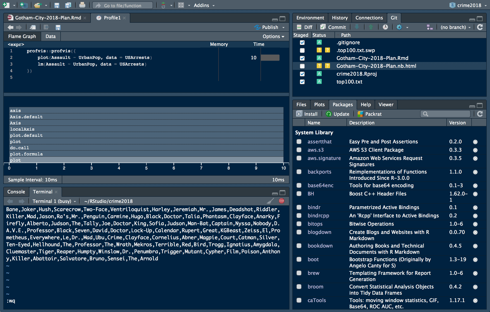

2017-08-30
Today, we’re continuing our blog series on new features in RStudio 1.1. If you’d like to try these features out for yourself, you can download a preview release of RStudio 1.1.
For those of us that like to work in black or very very dark grey, the dark theme can be enabled from the ‘Global Options’ menu, selecting the ‘Appearance’ tab and choosing an ‘Editor theme’ that is dark.
Icons are now high-DPI, a ‘Modern’ and ‘Sky’ theme were also added, read more about them under Using RStudio Themes.
All panels support themes: Code editor, Console, Terminal, Environment, History, Files, Connections, Packages, Help, Build and VCS. Other features like Notebooks, Debugging, Profiling , Menus and the Object Explorer support this theme as well.

However, the Plots and Viewer panes render with the default colors of your content and therefore, require additional packages to switch to dark themes. For instance, shinythemes provides the darkly theme for Shiny and ggthemes support for light = FALSE under ggplot. If you are a package author, consider using rstudioapi::getThemeInfo() when generating output to these panes.

Enjoy!